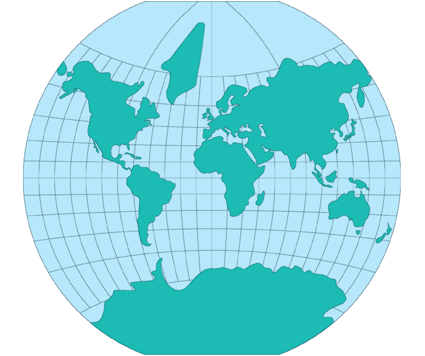

The Van der Grinten projection blends the Mercator appearance with the curves of the Mollweide an equal-area projection. it includes a simple graphical construction and limited formulas showing the mathematical coordinates along the central meridian, the Equator, and the outer (180th) meridian. The meridians are equally spaced along the Equator, but the spacing between parallels increases with latitude, so that the 75th parallels are shown about halfway between the Equator and the respective poles. Many Van der Grinten maps leave out the polar regions due to polar exaggeration.
* Usage information source:
Snyder, John P. Map Projections - A Working Manual Paper U.S. Geological Survey Professional Paper 1395. Washington: United States Government Printing Office, 1987.